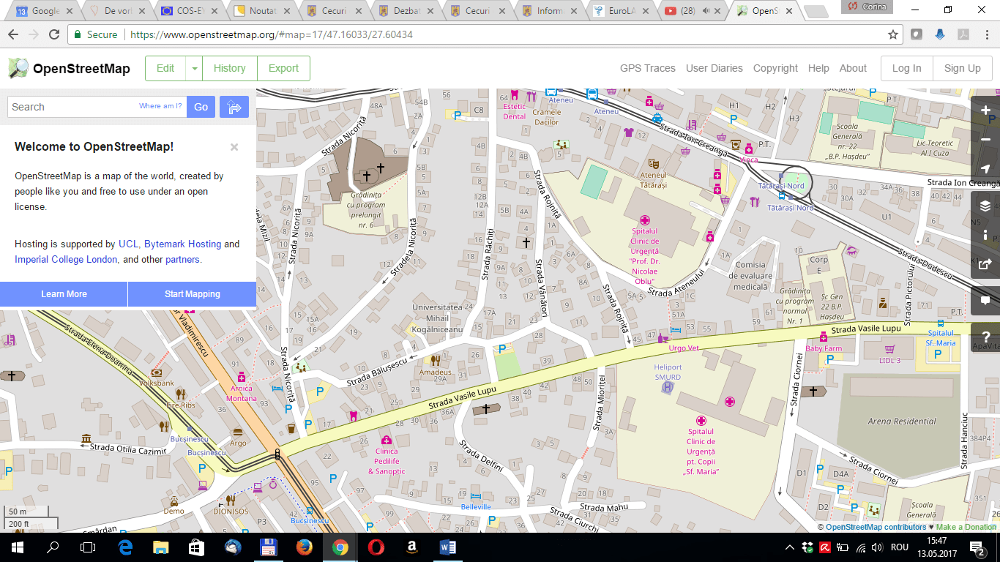
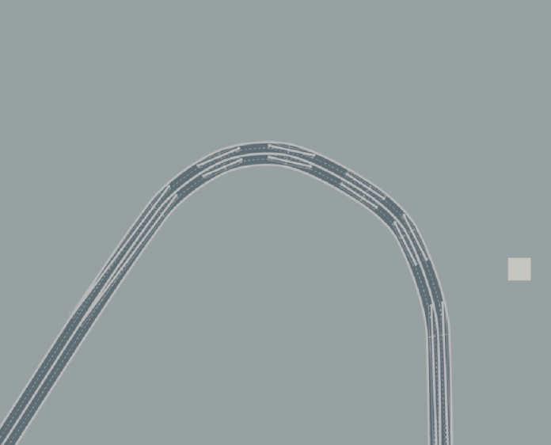
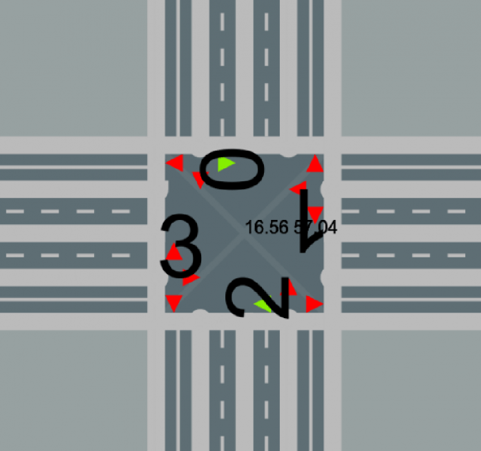

Data publicării: 03.05.2017
Autor articol: Corina Forascu
Problema congestiei traficului rutier s-a agravat constant pe parcursul ultimelor decenii în urma creșterii numărului de autoturisme pe cap de locuitor. Deși un sistem de simulare a traficului nu rezolvă în mod direct problema congestiei, acesta poate ajuta în determinarea cauzelor ce duc la crearea de congestii în orașe. Un astfel de sistem ce permite crearea de simulări rutiere folosindu-se de hărțIle rețelelor rutiere din orice oraș ajută la identificarea ușoară a zonelor ce pot provoca ambuteiaje. De asemenea, opțiunea de a modifica sistemul rutier dintr-o simulare oferă posibilitatea de a testa diverse configurații ale acestuiași de a alege cea mai bună variantă.
Pe baza analizei modelelor științifice folosite în modelarea traficului a fost propusă o lucrare de licență în cadrul căreia i s-au oferit posibile soluții pentru crearea unui sistem funcțional de modelare a traficului în cadrul unei rețele de drumuri.
Modelarea traficului reprezintă modelarea matematică a sistemelor de transporț precum rețele de autostrăzi, sensuri giratorii, traficul urban, etc. Simularea traficului a început în urmă cu aproximativ 40 de ani (Pursula, 1999) în urmă și a devenit o arie importantă a ingineriei traficului (Homburger et al., 2001). Importanța simulării traficului este dată de folosirea unor modele foarte complicate pentru metode analitice sau numerice. De asemenea poate fi folosită în studii experimentale și poate arăta cu ușurință detalii ce în urma unei abordări analitice ar fi trecute cu vederea.
Microsimularea este caracterizată de tratarea individuală a unităților, în cazul microsimulării a traficului unitățile fiind vehiculele și șoferii. Fiecare vehicul este tratat ca o entitate autonomă și interacțiunile dintre vehicule au loc în funcție de niște parametri stocastici (aleatori) atribuiți șoferilor. Acești parametri încearcă săreprezinte preferințele individuale ale șoferilor, precum viteza maximă pe care o doresc, spațiul pe care îl lasă față de mașina din față ș.a.m.d. Introducerea microsimulării traficului în aplicații comerciale la mijlocul anilor 1990 a reprezentat o avansare importantă la nivelul modelării traficului (Wood, 2012). Posibilitatea de a îndrepta atenția spre comportamentul individual al vehiculelorși a interacțiunilor dintre acestea pe o rețea de drumuri, plus abilitatea de a testadiferite scenarii și a vedea rezultate imediate cu ajutorul unor reprezentări grafice,poate fi considerată o revoluție în domeniul ingineriei traficului. în prezent este folosită într-o gamă largă de aplicații (Wood, 2012) ce examinează traficul în sensuri giratorii,traficul în mediul urban, impactul zonelor de parcare asupra aglomerării traficului,interacțiuni dintre pietoni, cicliști și trafic plus multe altele.în ciuda avantajelor evidente existăși critici la adresa acesteia. Una dintre cele mai uzuale observații este că orice încercare de a de crea un model ce dictează comportamentul individual al unui vehicul nu ne ajută să înțelegem influența directă a parametrilor modelului ceea ce face calibrarea acestuia aproape imposibilă.
Din punctul de vedere al macrosimulării, microsimularea este o opțiune scumpă din punct de vedere al resurselor folosite în timpul rulării și rezultatele oferite nu pot fi validate foarte ușor. Metodele tradiționale bazate pe macrosimulare care asignează un număr de călătorii pe o rețea de drumuri și calculează durata medie de timp a acestora pe intervale de timp mari (de obicei o oră). Microsimularea se diferențează de acestea punând accentul pe interacțiunea dintre vehiculele individuale, simulând comportamentul fiecăruia pe intervale scurte de timp, în general o secundă. Deoarece microsimularea se axează pe vehicul ca individ, aceasta permite oferirea unei simulări grafice real time, lucru ce nu este posibil în modele ce folosesc macrosimularea.
Principiul de bază al microsimulării este că părțile individuale ale sistemului,vehiculele, se comportă conform proprietăților si limitărilor fizice ale acestora (viteză, timp de frânare, etc.) și conform comportamentului șoferilor precum atențiași agresivitatea acestora. în microsimulare (Wood, 2012) comportamentul vehiculelor este dat în principal de trei modele principale ce interacționează între ele și anume urmărirea vehiculului din față, distanța de siguranță dintre vehicule și schimbarea benzilor.
Deși în ultimele două decenii microsimularea a fost aplicată cu succes în diferite probleme (Wood, 2012), unele ce nu puteau fi rezolvate cu ajutorul macrosimulării, încăsunt aduse critici împotriva microsimulării. Majoritatea au legătură cu importanța dată dinamicilor individuale ale vehiculelor în aceste modele. Criticii consideră că datorită existenței unor relații complexe, ce încă nu sunt pe deplin înțelese între părțile individuale ale sistemului, este necesară folosirea unor metode de calibrare ale sistemului în funcție de condițiile locale ale zonei asupra căreia se realizează simularea pentru a putea considera modelul ca fiind valid. Deoarece acest lucru presupune costuri ridicate, soluția propusă de critici este că ar trebuifolosite în continuare sistemele clasice de macrosimulare care se bazează pe relațiile bine stabilite între viteza medie a sistemului, capacitatea acestuia și a volumului.Totuși, prin definiție, orice model este doar o simplificare a realității, iar deoarece microsimularea permite adăugarea ușoară de noi parametri behavioristici oferă mai multe posibilități de modelare a traficului pe baza caracteristicilor fiecărui individ.
Spre deosebire de modelele microscopice de modelare a traficului care calculează pozițiile xa și velocitățile va individuale ale vehiculelor a la momentul t , modelele macroscopice se rezumă la descrierea dinamicilor grupurilor de vehicule cu ajutorul densității vehiculelor într-un spațiu r(x; t ) și a velocității medii V (x; t ) în funcție de locația pe șosea x și a momentului în timp t . Unul dintre avantajele modelelor macroscopice este acela că permit simulării dinamicii traficului pe mai multe benzi de condus folosindu-se de modele cu o singură bandă, luând în considerare o probabilitate diferită de zero de schimbare de bandă. Există și posibilitatea creării de modele macroscopice care să ia în calcul existența unui număr multiplu de benzi cu un sistem concret de tratare a schimbării benzii.
Datorită conservării numărului de vehicule, toate modelele macroscopice de modelare a traficului au la bază o ecuație de continuitate. Diferențele dintre sistemele macroscopice existente apar în principal la nivelul ecuației ce calculează velocitatea medie a vehiculelor V (x; t ). Modelul Lighthill-Whitham (Lighthill and G.B. Whitham, 1955; Richards, 1956) și variantele acestuia se bazează pe o relație de echilibru. Totuși, pentru a putea reprezenta posibile ambuteiaje este nevoie de o ecuație dinamică pentru velocitate. Majoritatea soluțiilor continue oferite până în prezent folosesc o aceeași ecuație a velocității, diferențele principale între aceste soluții fiind date de coeficientul de presiune, timpul de relaxare și velocitatea dinamică de echilibru, care depinde de densitatea locală a vehiculelor. Au fost avute în vedere modelul lui Payne (Payne, 1971), modelul lui Cremer (Cremer, 1979), modelul lui Phillips (Phillips, 1979).
În ciuda rezultatelor aduse de modelele precizate mai sus, acestea au primit criticidin partea lui Daganzo (Daganzo 1995) adresate inconsistențelor teoretice ale acestora. în timp ceabordările clasice își îndreaptă atenția asupra reproducerii valorilor determinate în mod empiric pentru relația dintre velocitate și densitate, publicații recente afirmă că realizarea de modele de simulare a traficului capabile să descrie fenomene non-liniare este mult mai importantă.
Datele geografice sau geodatele reprezintă un termen care se referă la stocarea digitală de informație aflată în spațiu geografic. Un sistem de prelucrare, interogare și manipulare a datelor geografice deține termenul de sistem GIS (Geographic InformationSystem). Prima mențiune referitoare la GIS a fost facută de către Roger Tomlinson (Greiner, 2007) în 1968, acesta fiind denumit și părintele GIS-ului. Indiferent de modalitea de stocare a datelor (geoJSON, xml, pbf, etc.) clasificarea spațială, este făcută după caracteristicile topologice ale acestora:
-
puncte – definirea datelor simple (puncte de interes)
-
linii – în majoritatea cazurilor definesc drumuri sau delimitări
-
poligoane – arii de interes, cartiere, reședințe, blocuri
-
multi-poligoane – o colecție de unul sau mai multe poligoane îngrădită de un poligon exterior.
Există două tipuri de modalități de stocare și distribuire a datelor geografice, vectorizarea sau randarea datelor pe tile-uri ca și relaționare spațială sau distribuirea acestora după relațiile dintre atribute.
Tehnologiile folosite pentru implementarea sistemului TRACS de modelare a unei rețele de drumuri sunt Spring Framework – platformă Java care furnizează o infrastructură vastă de suport pentru a dezvolta aplicații, permițând o dezvoltare rapidă a funcționalităților noi prin componentele sale modulare (Spring Framework refference), MongoDB – bază de date de tip open-source orientată pe documente ce furnizează un nivel înalt de performanță, disponibilitate și scalare (MongoDB Docs), biblioteca Retrofit – un client REST type-safe pentru Android și Java creat de Square Open Source (Retrofit Docs), AngularJS – arhitectură structurală pentru aplicații web dinamice care permite folosirea limbajului HTML ca un limbaj șablon și extinderea sintaxei acestuia (AngularJS. Conceptual overview) și librăria D3.js – Data-driven documents – pentru manipularea documentelor în funcțiede datele din acestea. Care oferă un grad ridicat de portabilitate și compatibilitate cu browserele moderne (Bostock, 2016.).
Serviciile de date care au fost folosite în implementarea TRACS sunt Open Street Maps (Ramm et al., 2010) – un proiect colectiv, în regim open source, ce permite construirea unei hărți ale lumii editabile, care are însă un timp de răspuns dependent de dimensiunea cadranului cu care se lucrează. Cel de al doilea serviciu de date utilizat este MapZen (MapZen Docs) – un serviciu modern bazat pe instrumente open-source. Prin procesul numit geocodare, MapZen permite folosirea limbajului natural pentru a găsi un loc prin introducerea adresei și conversia rezultatului în coordonate geografice, folosind serviciul de geocodare. MapZen accesează bazele de date globale ale numelor și ale localităților, dar pot fi primite mai multe rezultate relevante prin limitarea căutării la o arie mai mică: in jurul locației, regiunii sau a țării. Mapzen permite de asemenea si procesul invers, cunoscut ca geocodare inversă, ce transformă latitudinea si longitudinea intr-o listă de locuri. Serviciul MapZen este bazat pe datele extrase de pe Open Street Maps, dar limitarea apelurilor la o anumită regiune permite timpi de răspuns mai mici.
O imagine a unei zone a orașului Iași prin Open Street Maps poate fi urmărită în Figura 1.

Drumurile au fost reprezentate printr-un model bazat pe spline – o colecție de curbe quadratice (Joy, 1996). Fiecare punct de control al unei curbe este calculat în funcție de panta punctului precedent și cel viitor, ca în figura următoare.

Punctele ce reprezintă spline-ul sunt: centrul segmentului sursă al intersecției din care pornește drumul, punctele intermediare și punctul central al segmentului intersecției destinație.
Fiecare intersecție este reprezentată grafic de un pătrat ce permite un număr maxim de 4 drumuri, fiecare dintre acestea fiind identificat cu numărul laturii pe care există. Determinarea acestuia este făcută de sectoarele delimitatoare ale celor două diagonale ale pătratului, ca în Figura 3.

Simularea este realizată pe baza constrângerilor matematice ale Modelului IDM.
Modelul Intelligent Driver (IDM) este un model de tip car-following, continuu în timp folosit în simularea traficului urban sau pe autostrăzi. A fost realizat de către Treiber, Hennecke și Helbing (Treiber et al., 2000) și a avut ca scop îmbunătățirea rezultatelor oferite de alte modele cu șoferi “inteligenți”, precum modelul lui Gipp’s, care oferă rezultate nerealiste în apropierea limitelor deterministice
Modelul Gipp’s este un model de tip car-following creat de Peter G. Gipps ˆın anii 1970 ce se bazează pe comportamentul șoferului. Comportamentul șoferilor aflați într-o coloană este imitat cu ajutorul unor constrângeri impuse asupra șoferului și asupra parametrilor vehiculului, încercându-se astfel evitarea accidentelor (Papathanasopoulou & Antoniou, 2015). Modelul lui Gipp’s se diferențiază de alte modele de tip car-following prin folosirea unui interval de timp t pentru a reduce numărul de calcule necesare Modelul îmbunătățit propus de Gipps pornește de la ideea că acesta trebuie să respecte următoarele trei proprietăți fundamentale pentru a fi realmente util:
1. Modelul trebuie să reflecte condiții din lumea reală,
2. Parametri modelului trebuie să corespundă cu caracteristicile vizibile ale șoferului fără a fi necesare calcule suplimentare,
3. Modelul trebuie să se comporte conform așteptărilor atunci când intervalul de timp t dintre calcule succesive este egal cu timpul de reacție al șoferului.
Gipps impune limitări asupra modelului prin considerente de siguranță și prin presupunerea că un șofer își estimează propria viteză în funcție de viteza vehiculului aflat direct în față, astfel încât să poată frâna în siguranță (Treiber et al., 2000).
Constrângerile matematice ale modelului IDM implică schimbarea benzii forțată în cazul schimbării direcției de mers în următoarea intersecție. Această contrangere este existentă în cadrul intersecțiilor semaforizate cu mai mult de 2 drumuri. Cei șase parametri ai sistemului sunt velocitatea, distanța minimă, lungimea mașinii, timpul minim de frânare, accelerația maximă și decelerația maximă. Fiecare mașină deține o copie internă a acestor parametri. De notat faptul că sistemul permite frânarea cu mai mult decât decelerația maximă în cazul unei urgențe.
Ca posibile direcții de lucru pe viitor se pot avea în vedere: concepte din modelarea fenomenelor umane în perspectiva congestiei traficului (prin nivele de agresivitate ale șoferilor, definirea unor statistici pe populație (Macadam, 2003), sistem de monitorizare a traficului pentru preluarea și adaptarea datelor referitoare la densitatea reală a intersecțiilor și a drumurilor, precum și modelarea vehicolelor și a rutelor de transport în comun. în cadrul optimizării sistemului următoarele direcții posibile ar consta în identificarea unei alte soluții de preluarea și stocare a datelor geografice, bufferizarea de canvasuri, identificare a unei soluții de computație paralelă a sistemului între client și server.
Referințe
- AngularJS. Conceptual overview. http://docs.angularjs.org/guide
- Bostock Mike. D3.js documentation, 2016. http://d3js.org/
- M. Cremer. Der verkehrsfluß auf schnellstraßen. Springer, 1979. http://link.springer.com/book/10.1007%2F978-3-642-95346-0
- C.F. Daganzo. Requiem for second-order fluid approximations of traffic flow. Transportation Research B, Volume 29, Issue 4, pages 277-286, August 1995. http://doi.org/10.1016/0191-2615(95)00007-Z
- Greiner Lynn. Putting Canada on the map – Father of digitized mapping recounts how a stroke of luck led him to develop the world’s first geographic information system”. The Globe and Mail. December 2007. http://www.theglobeandmail.com/technology/science/roger-tomlinson-the-father-of-computerized-cartography/article17185506/
- Homburger Wolfgang S., Jerome W. Hall, William R. Reilly, and Edward C. Sullivan. Fundamentals of traffic engineering. Institute of Transportation Studies, University of California, Berkeley, 2001. http://its.berkeley.edu/publications/textbook
- Joy, Kenneth. Quadratic Bezier Curves. On-Line Geometric Modelling Notes. University of California, Davis.1996. http://www.idav.ucdavis.edu/education/CAGDNotes/Quadratic-Bezier-Curves.pdf
- M.J. Lighthill and G.B. Whitham. On kinematic waves: II. a theory of traffic on long crowded roads. Proceedings of the Royal Society A, 229:317–345, 1955. http://amath.colorado.edu/sites/default/files/2013/09/1710796241/PRSA_Lighthill_1955.pdf
- Macadam Charles. Understanding and Modelling the Human Driver. Vehicle System Dynamics, Vol. 40, Nos. 1–3, pp. 101–134. 2003. http://deepblue.lib.umich.edu/bitstream/handle/2027.42/65021/MacAdam?sequence=1
- MapZen documentation. Online: http://mapzen.com/documentation/overview/
- MongoDB 3.4 Manual, Inc. MongoDB.. 2016. http://docs.mongodb.com/manual/
- Papathanasopoulou Vasileia and Constantinos Antoniou. Towards data-driven car-following models. Transportation Research Part C: Emerging Technologies. Volume 55, June 2015, Pages 496–509. cfloess_vasileia_tr_c_cafinal5.pdf
- H.J. Payne. Models of freeway traffic and control. In Mathematical Models of Public Systems, editor, G.A. Bekey, volume 1, pages 119–137, La Jolla, CA, 1971. http://www.dcsc.tudelft.nl/~bdeschutter/pub/rep/01_11.pdf
- W.F. Phillips. A kinetic model for traffic flow with continuum implications. Transportation Planning and Technology, 5:131–138, 1979. http://www.tandfonline.com/doi/abs/10.1080/03081067908717157
- Pursula, Matti. Simulation of traffic systems – an overview. Journal of Geographic Information and Decision Analysis, 3(1):1–8, 1999. http://publish.uwo.ca/~jmalczew/gida_5/Pursula/Pursula.html
- Ramm, Frederik; Topf, Jochen; Chilton, Steve. OpenStreetMap: Using and Enhancing the Free Map of the World. UIT Cambridge. 2010 http://www.openstreetmap.info/
- Retrofit documentation. Inc. Square. 2016. http://square.github.io/retrofit/
- P.I. Richards. Shock waves on the highway. Operations Research, 4:42–51, 1956. http://www.jstor.org/stable/167515?seq=1#page_scan_tab_contents
- Spring Framework Reference Documentation, Inc. Pivotal Software. 2016 http://docs.spring.io/spring/docs/current/spring-framework-reference/pdf/spring-framework-reference.pdf
- Treiber Martin, Ansgar Hennecke and Dirk Helbing. Congested traffic states in empirical observations and microscopic simulations. Physical Review E, 62:1805–1824. 2000 http://arxiv.org/abs/cond-mat/0002177
- Wood, Steven. Traffic microsimulation – dispelling the myths. Traffic Engineering and Control (TEC), October 2012. http://www.sias.com/2013/pdfs/TEC%201210%20STEVEN%20WOOD%20master.pdf